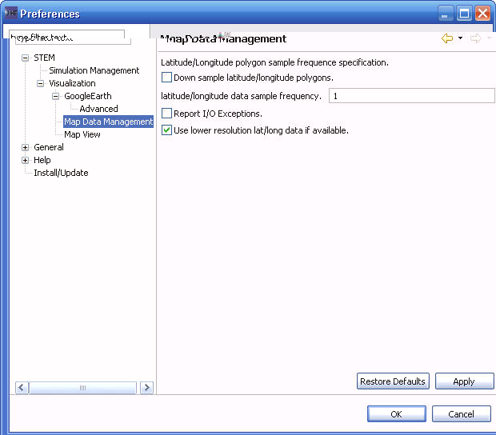

Map Data Management
The Map Data Management preferences page sets preferences for
managing the latitude/longitude data that defines the borders of
geographic polygons.
- "Down sample latitude/longitude polygons." If True,
then the full resolution polygon data will be "sampled" by skipping
over data points in the polygons (as specified in the sample frequency)
(Default: False)
- "latitude/longitude data sample frequency."The
number of lat/long data points to skip when sampling the full
resolution data. (Default: 1)
- "Report I/O Exceptions." If True, then an error in
reading in the lat/long data for a country will be reported. Typically,
this is False as there are a few countries where the lat/long data is
missing and this can be ignored. (Default: False)
- "Use lower resolution lat/long data if available" If
True, then the geographic visualizations will favor the use of
pre-computed lower resolution data sets instead of more detailed
resolution data. This can result in faster visualization performance
with the potential for slight visual defects. In practice, the visual
impact is undetectable while the increase in performance is dramatic.
(Default: True)
